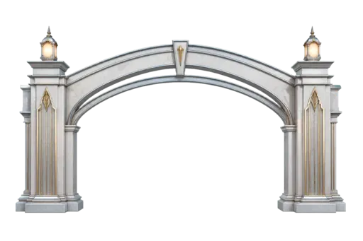

<!doctype html>
<html lang="ja">
<meta charset="utf-8">
<meta name="viewport" content="width=device-width, initial-scale=1">
<title>Tier gate arrival direction</title>
<style>
  :root { color-scheme: dark; }
  * { box-sizing: border-box; }
  body { margin: 0; min-height: 100vh; display: grid; place-items: center; background: #17242f; font-family: Georgia, "Hiragino Mincho ProN", serif; }
  .phone { position: relative; width: 390px; height: 844px; overflow: hidden; background: #e8e3d7; color: #fff; }
  .world { position: absolute; inset: 0; background: linear-gradient(180deg, #667f95 0 10%, #f4e9d1 31%, #e6c98d 100%); }
  .sun { position: absolute; top: 46px; left: 142px; width: 106px; height: 106px; border-radius: 50%; background: #f7d68a; box-shadow: 0 0 48px 20px #f7d68a88; }
  .road { position: absolute; inset: 116px -72px -15px; background: linear-gradient(90deg, transparent 0 14%, #c4ad80 14% 16%, #eee1c8 16% 84%, #c4ad80 84% 86%, transparent 86%); clip-path: polygon(43% 0, 57% 0, 100% 100%, 0 100%); }
  .road::after { content: ""; position: absolute; inset: 0; background: repeating-linear-gradient(180deg, transparent 0 75px, #d5b878 76px 82px, transparent 83px 154px); opacity: .72; }
  .gate { position: absolute; z-index: 3; left: -22px; top: 162px; width: 434px; filter: drop-shadow(0 9px 10px #1c182933); animation: settle 4s ease-in-out infinite; }
  .curtain { position: absolute; z-index: 2; top: 270px; left: 87px; width: 216px; height: 218px; overflow: hidden; opacity: 0; animation: curtain 4s ease-in-out infinite; }
  .curtain::before, .curtain::after { content: ""; position: absolute; top: 0; width: 52%; height: 100%; background: linear-gradient(90deg, #e8fbff99, #95d7ff22); box-shadow: 0 0 24px #dffcff; }
  .curtain::before { left: 0; transform-origin: left; }
  .curtain::after { right: 0; transform-origin: right; background: linear-gradient(270deg, #e8fbff99, #95d7ff22); }
  .rays { position: absolute; z-index: 1; inset: 128px 0 168px; background: repeating-conic-gradient(from 247deg at 50% 32%, #effcff00 0 10deg, #f8ffffa6 11deg 12deg, #effcff00 13deg 25deg); opacity: 0; animation: rays 4s ease-in-out infinite; }
  .car { position: absolute; z-index: 4; top: 536px; left: 166px; width: 59px; height: 100px; background: linear-gradient(90deg, #20272b, #3a4448 46%, #161d20); border: 3px solid #ceac5d; border-radius: 24px 24px 14px 14px; box-shadow: 0 8px 11px #1a141766; transform: perspective(180px) rotateX(8deg); }
  .car::before { content: ""; position: absolute; left: 10px; right: 10px; top: 11px; height: 36px; border-radius: 12px 12px 5px 5px; background: linear-gradient(90deg, #7da4b8, #d8ecf3, #6f95a5); }
  .plaque { position: absolute; z-index: 5; top: 555px; left: 50%; width: 234px; padding: 12px 14px 11px; transform: translateX(-50%) scale(.86); border: 1px solid #e2c785; background: #182c3bdd; box-shadow: 0 9px 30px #1e384988, inset 0 0 0 3px #e3f7ff18; text-align: center; opacity: 0; animation: plaque 4s ease-in-out infinite; }
  .eyebrow { margin: 0 0 4px; color: #d3eef9; font-size: 10px; letter-spacing: 0; }
  h1 { margin: 0; color: #fff; font-size: 25px; font-weight: 500; letter-spacing: 0; }
  .nights { margin: 5px 0 0; color: #eccf80; font-size: 13px; letter-spacing: 0; }
  .caption { position: absolute; z-index: 6; right: 14px; bottom: 16px; color: #243847; font-size: 10px; letter-spacing: 0; }
  @keyframes settle { 0%, 12% { transform: scale(.94); filter: drop-shadow(0 9px 10px #1c182933) brightness(.9); } 32%, 58% { transform: scale(1.06); filter: drop-shadow(0 9px 18px #deefffaa) brightness(1.16); } 75%, 100% { transform: scale(1); } }
  @keyframes curtain { 0%, 13% { opacity: 0; transform: scaleX(0); } 25%, 58% { opacity: .95; transform: scaleX(1); } 70%, 100% { opacity: 0; transform: scaleX(1); } }
  @keyframes rays { 0%, 14% { opacity: 0; transform: scale(.76); } 27%, 55% { opacity: .72; transform: scale(1); } 72%, 100% { opacity: 0; transform: scale(1.1); } }
  @keyframes plaque { 0%, 43% { opacity: 0; transform: translateX(-50%) scale(.86); } 55%, 75% { opacity: 1; transform: translateX(-50%) scale(1); } 100% { opacity: 0; transform: translateX(-50%) translateY(42px) scale(.62); } }
</style>
<main class="phone" aria-label="プラチナ到達演出の390pxモック">
  <div class="world"><div class="sun"></div><div class="road"></div></div>
  <div class="rays"></div>
  <div class="curtain"></div>
  
  <div class="car" aria-hidden="true"></div>
  <section class="plaque" aria-label="到達メッセージ"><p class="eyebrow">NEW TIER</p><h1>PLATINUM</h1><p class="nights">50 NIGHTS ACHIEVED</p></section>
  <p class="caption">arrival direction / 390 px</p>
</main>
</html>
